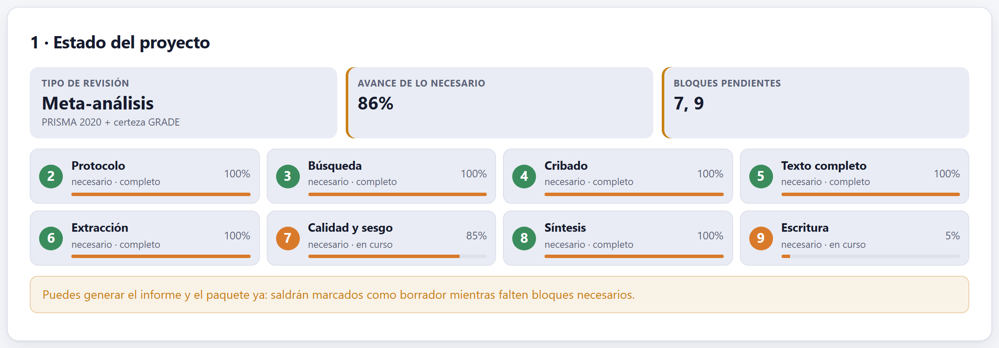
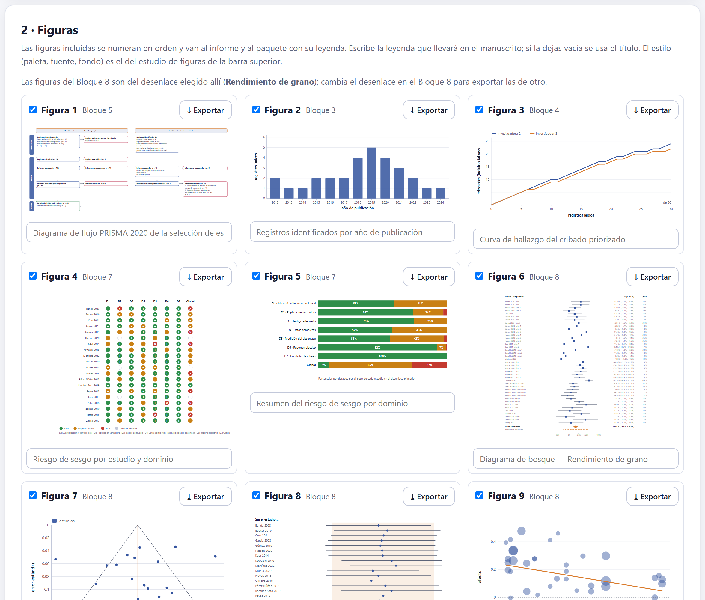
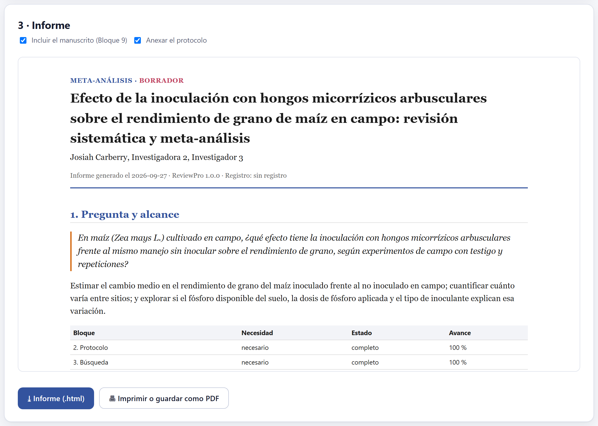
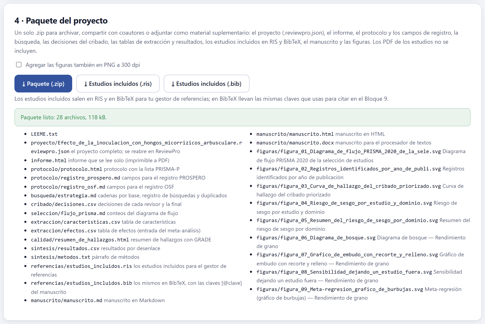

Todo lo hecho, listo para salir de la app: dónde está el proyecto frente a lo que su tipo de revisión necesita; las figuras de todos los bloques en un solo lugar, numeradas y con su leyenda; un informe de un solo archivo que se abre en cualquier navegador y se imprime a PDF; y un .zip con el archivo del proyecto que reproduce la revisión entera, más el manuscrito, las tablas, las referencias y las figuras.

El Bloque 10 empieza por un inventario. Cada bloque de trabajo (2 a 9) aparece como necesario, opcional o no aplica según el tipo de revisión —los mismos de la ruta de la portada—, con su estado (completo, en curso o sin empezar) y su avance. Un clic en una tarjeta lleva a su bloque.
| Bloque | Cómo se mide su avance |
|---|---|
| 2 Protocolo | Las secciones completas de la revisión del protocolo (sección 2.8). |
| 3 Búsqueda | Hay estrategia y hay registros importados. |
| 4 Cribado | Los registros con decisión final (o no leídos tras la regla de paro). |
| 5 Texto completo | Los informes resueltos; completo cuando no queda nada pendiente. |
| 6 Extracción | Los estudios con efectos (en un meta-análisis) o con algún dato extraído. |
| 7 Calidad y sesgo | Los estudios con juicio global final. |
| 8 Síntesis | Los desenlaces que el modelo pudo combinar. |
| 9 Escritura | Las secciones que llegan al mínimo de su meta de palabras. |
Mientras falte algo necesario, la app lo dice y el informe y el paquete salen marcados como BORRADOR; puedes generarlos igual, para compartir un avance.

Aquí están las figuras de todos los bloques: el diagrama PRISMA, los registros por año, la curva del cribado, el semáforo y el resumen del riesgo de sesgo, el bosque, el embudo, la sensibilidad, las burbujas, el mapa de vacíos y el cronograma. Aparecen las que ya tienen contenido, se numeran en orden y entran al informe y al paquete con su leyenda.
El estilo es el del estudio de figuras de la barra superior: paleta, tipografía, grosores y fondo cambian todas las figuras a la vez. Las del Bloque 8 son del desenlace elegido allí; para exportar las de otro, cámbialo en el Bloque 8 y vuelve. Si cambiaste algo en otro bloque, ↻ Actualizar desde los bloques redibuja la galería.
| Si la revista acepta figuras vectoriales, o la vas a retocar | entonces SVG: no se pixela y se edita en cualquier programa de dibujo vectorial. |
| Si pide imágenes de mapa de bits | entonces PNG a 300 ppp (600 si lo pide); la resolución queda escrita en el archivo, que es lo que lee la revista. |
| Si el diagrama de bosque tiene muchos efectos | entonces exporta a tamaño completo de página y revisa que las etiquetas se lean impresas. |

El informe es un solo archivo .html, sin dependencias, que se lee en cualquier navegador y se imprime a PDF con 🖶 Imprimir o guardar como PDF. Sirve para compartir el estado de la revisión con coautores, con un comité o con quien pide el material suplementario. Sus secciones:
| Sección | Qué contiene |
|---|---|
| Encabezado | Tipo de revisión (y «BORRADOR» si falta algo necesario), título, autores, fecha, versión del programa y registro. |
| 1 · Pregunta y alcance | La pregunta, los objetivos, el estado de cada bloque y la guía de reporte. |
| 2 · Búsqueda | El informe de la búsqueda del Bloque 3 y la figura de registros por año. |
| 3 · Selección de estudios | El flujo en una frase, el acuerdo entre revisores, el diagrama PRISMA y la curva del cribado. |
| 4 · Estudios incluidos | La tabla de características. |
| 5 · Riesgo de sesgo | La herramienta y los dos gráficos. |
| 6 · Síntesis | Los resultados por desenlace, el párrafo de métodos y las figuras del Bloque 8. |
| 7 · Certeza de la evidencia | El resumen de hallazgos con GRADE. |
| 8 · Manuscrito | El texto del Bloque 9 con citas y referencias (casilla Incluir el manuscrito). |
| Anexo A · Protocolo | El documento del protocolo (casilla Anexar el protocolo). |
Todos los números salen del proyecto en el momento de generarlo. Si después cambias algo, genera el informe de nuevo.

⤓ Paquete (.zip) reúne en un solo archivo todo lo que la revisión produjo, en carpetas:
| Archivo | Qué es |
|---|---|
LEEME.txt | Qué hay en el paquete y cómo reabrir el proyecto. |
proyecto/….reviewpro.json | El proyecto completo: se abre en el Bloque 2 de cualquier copia de ReviewPro y reproduce cada número. |
informe.html | El informe de la sección 10.3. |
protocolo/ | El protocolo y los campos de los registros PROSPERO y OSF. |
busqueda/, cribado/, seleccion/ | La estrategia y su bitácora, todas las decisiones del cribado y los conteos del diagrama de flujo. |
extraccion/, calidad/, sintesis/ | Las tablas de características y de efectos, el resumen de hallazgos, los resultados por desenlace y el párrafo de métodos. |
referencias/ | Los estudios incluidos en RIS y en BibTeX, con las claves de cita del manuscrito. |
manuscrito/ | El manuscrito en Word, HTML y Markdown. |
figuras/ | Las figuras incluidas en SVG, numeradas y con su leyenda como título; con la casilla, también en PNG a 300 ppp. |
Los PDF de los estudios no van en el paquete: el proyecto solo guarda dónde está cada uno. Los botones ⤓ Estudios incluidos (.ris) y (.bib) descargan solo las referencias, para el gestor de referencias.
Que otra persona pueda ver cada decisión y repetir cada cálculo: la búsqueda tal como se corrió, por qué se excluyó cada registro, qué valor se extrajo de cada artículo y de dónde, cómo se juzgó cada estudio y con qué modelo se combinaron. El archivo del proyecto guarda todo eso, y los cálculos son deterministas: el mismo proyecto da los mismos números en cualquier computadora y sin conexión. El paquete lo reunió la propia app, byte a byte, según la especificación pública del formato .zip, sin bibliotecas ajenas.
«Todavía no hay figuras», el aviso de borrador y, al armar el paquete, cuántos archivos salieron o el error si algo falló.
| Si el estado dice BORRADOR | entonces termina los bloques pendientes, o explica en el manuscrito por qué no aplican. |
| Si el verificador del Bloque 9 señala afirmaciones | entonces respáldalas o reescríbelas antes de enviar. |
| Si la lista PRISMA tiene puntos en «falta» | entonces agrégalos: son los que los árbitros revisan primero. |
| Si cambiaste datos después de exportar | entonces exporta de nuevo el manuscrito, las figuras, el informe y el paquete: cada archivo exportado es una foto del proyecto en ese momento. |
| Si la revista pide datos y código | entonces adjunta el paquete: el archivo del proyecto y las tablas son los datos, y ReviewPro con su versión es el código. |
Con esto se cierran los diez bloques. Siguen los apéndices: los archivos que la app lee y escribe, las reglas de decisión reunidas, el glosario, qué hacer cuando algo no sale, las referencias y la licencia.